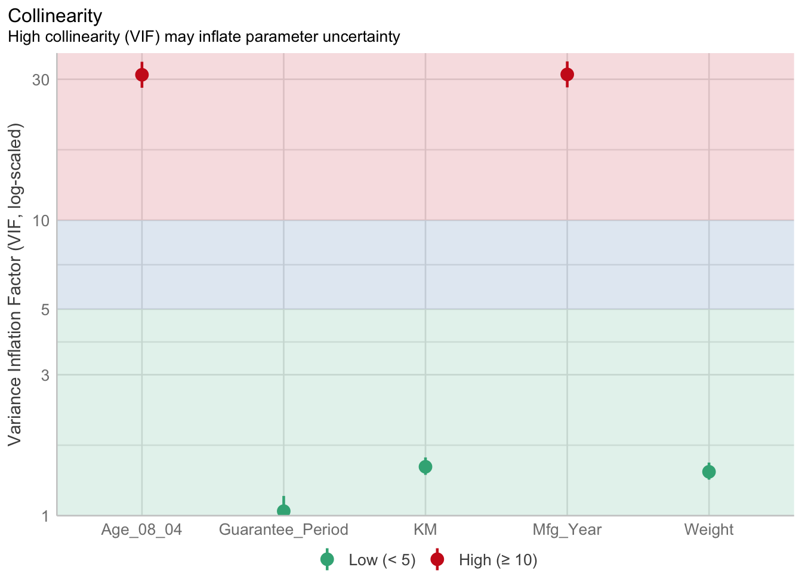
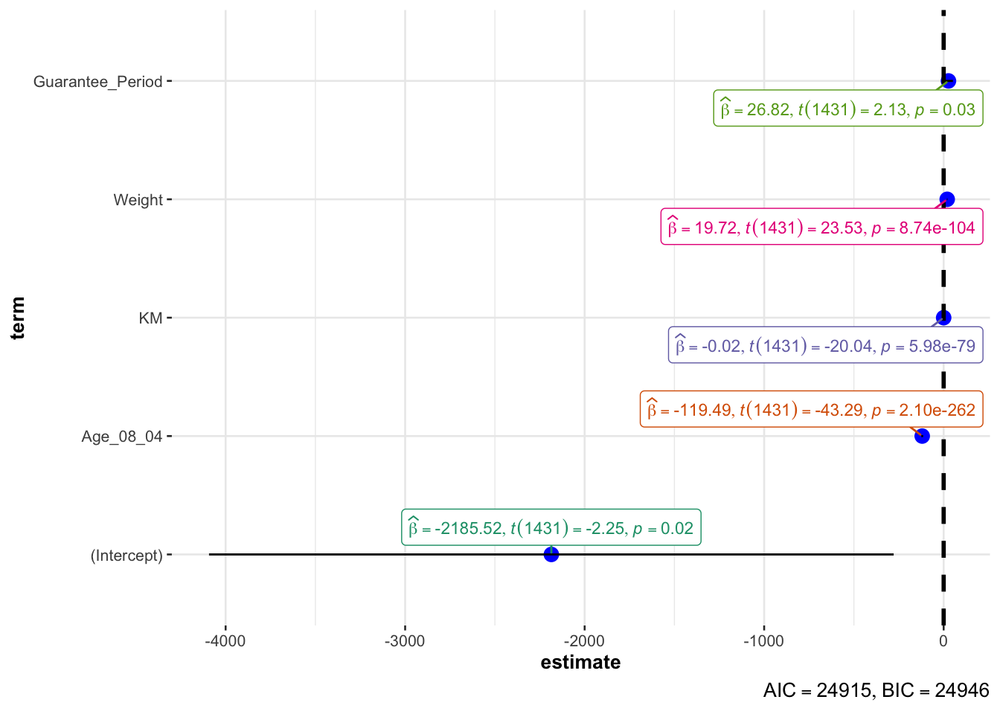

pacman::p_load(tidyverse, readxl, performance, parameters, see, ggstatsplot)Model Diagnostics

1. Learning Objectives
Visualise model diagnostic using
performancepackageVisualise model parameters using
parameterspackage
2. Load Packages
The following packages
performancecompute indices of model quality and goodness of fit. It measures r-squared (R2), root mean squared error (RMSE) or intraclass correlation coefficient (ICC) , but also functions to check (mixed) models for overdispersion, zero-inflation, convergence or singularity.parametersprocesses the parameters of various statistical models. It computes p-values, CIs, Bayesian indices and implements features, like bootstrapping of parameters and models, feature reduction (feature extraction and variable selection), or tools for data reduction like functions to perform cluster, factor or principal component analysis.seecomplements numeric summaries to produce visualizations for model parameters, predictions, and performance diagnostics.ggstatsplotcreates graphics with statistical tests in the information-rich plots.
3. Import Data
Toyota Corolla is a car dataset with a set of explanatory variables.
car_resale <- read_xls("data/ToyotaCorolla.xls", "data")
glimpse(car_resale)Rows: 1,436
Columns: 38
$ Id <dbl> 81, 1, 2, 3, 4, 5, 6, 7, 8, 44, 45, 46, 47, 49, 51, 6…
$ Model <chr> "TOYOTA Corolla 1.6 5drs 1 4/5-Doors", "TOYOTA Coroll…
$ Price <dbl> 18950, 13500, 13750, 13950, 14950, 13750, 12950, 1690…
$ Age_08_04 <dbl> 25, 23, 23, 24, 26, 30, 32, 27, 30, 27, 22, 23, 27, 2…
$ Mfg_Month <dbl> 8, 10, 10, 9, 7, 3, 1, 6, 3, 6, 11, 10, 6, 11, 11, 11…
$ Mfg_Year <dbl> 2002, 2002, 2002, 2002, 2002, 2002, 2002, 2002, 2002,…
$ KM <dbl> 20019, 46986, 72937, 41711, 48000, 38500, 61000, 9461…
$ Quarterly_Tax <dbl> 100, 210, 210, 210, 210, 210, 210, 210, 210, 234, 234…
$ Weight <dbl> 1180, 1165, 1165, 1165, 1165, 1170, 1170, 1245, 1245,…
$ Guarantee_Period <dbl> 3, 3, 3, 3, 3, 3, 3, 3, 3, 3, 3, 3, 3, 3, 3, 3, 3, 3,…
$ HP_Bin <chr> "100-120", "< 100", "< 100", "< 100", "< 100", "< 100…
$ CC_bin <chr> "1600", ">1600", ">1600", ">1600", ">1600", ">1600", …
$ Doors <dbl> 5, 3, 3, 3, 3, 3, 3, 3, 3, 5, 5, 5, 5, 5, 5, 5, 3, 3,…
$ Gears <dbl> 5, 5, 5, 5, 5, 5, 5, 5, 5, 5, 5, 5, 5, 5, 5, 5, 5, 5,…
$ Cylinders <dbl> 4, 4, 4, 4, 4, 4, 4, 4, 4, 4, 4, 4, 4, 4, 4, 4, 4, 4,…
$ Fuel_Type <chr> "Petrol", "Diesel", "Diesel", "Diesel", "Diesel", "Di…
$ Color <chr> "Blue", "Blue", "Silver", "Blue", "Black", "Black", "…
$ Met_Color <dbl> 1, 1, 1, 1, 0, 0, 0, 1, 1, 0, 0, 0, 1, 1, 1, 1, 1, 1,…
$ Automatic <dbl> 1, 0, 0, 0, 0, 0, 0, 0, 0, 0, 0, 0, 0, 0, 0, 0, 0, 0,…
$ Mfr_Guarantee <dbl> 0, 0, 0, 1, 1, 1, 0, 0, 1, 1, 1, 0, 0, 1, 1, 1, 0, 1,…
$ BOVAG_Guarantee <dbl> 0, 1, 1, 1, 1, 1, 1, 1, 1, 1, 1, 1, 1, 1, 1, 1, 1, 1,…
$ ABS <dbl> 1, 1, 1, 1, 1, 1, 1, 1, 1, 1, 1, 1, 1, 1, 1, 1, 1, 1,…
$ Airbag_1 <dbl> 1, 1, 1, 1, 1, 1, 1, 1, 1, 1, 1, 1, 1, 1, 1, 1, 1, 1,…
$ Airbag_2 <dbl> 1, 1, 1, 1, 1, 1, 1, 1, 1, 1, 1, 1, 1, 1, 1, 1, 1, 1,…
$ Airco <dbl> 1, 0, 1, 0, 0, 1, 1, 1, 1, 1, 1, 1, 1, 1, 1, 1, 1, 1,…
$ Automatic_airco <dbl> 1, 0, 0, 0, 0, 0, 0, 0, 0, 0, 0, 1, 0, 0, 0, 1, 0, 1,…
$ Boardcomputer <dbl> 0, 1, 1, 1, 1, 1, 1, 1, 1, 1, 1, 1, 1, 1, 1, 1, 1, 1,…
$ CD_Player <dbl> 1, 0, 1, 0, 0, 0, 0, 0, 1, 0, 0, 0, 1, 0, 1, 1, 1, 1,…
$ Central_Lock <dbl> 1, 1, 1, 0, 0, 1, 1, 1, 1, 1, 1, 1, 1, 1, 1, 1, 1, 1,…
$ Powered_Windows <dbl> 1, 1, 0, 0, 0, 1, 1, 1, 1, 1, 1, 1, 1, 1, 1, 1, 1, 1,…
$ Power_Steering <dbl> 1, 1, 1, 1, 1, 1, 1, 1, 1, 1, 1, 1, 1, 1, 1, 1, 1, 1,…
$ Radio <dbl> 0, 0, 0, 0, 0, 0, 0, 0, 0, 0, 0, 0, 0, 0, 0, 0, 0, 0,…
$ Mistlamps <dbl> 0, 0, 0, 0, 0, 1, 1, 0, 0, 0, 0, 0, 0, 0, 0, 0, 0, 0,…
$ Sport_Model <dbl> 0, 0, 0, 0, 0, 0, 0, 1, 0, 1, 1, 0, 1, 1, 1, 1, 1, 1,…
$ Backseat_Divider <dbl> 0, 1, 1, 1, 1, 1, 1, 1, 1, 1, 1, 1, 1, 1, 1, 1, 1, 1,…
$ Metallic_Rim <dbl> 0, 0, 0, 0, 0, 0, 0, 0, 0, 0, 0, 0, 0, 0, 0, 0, 0, 0,…
$ Radio_cassette <dbl> 0, 0, 0, 0, 0, 0, 0, 0, 0, 0, 0, 0, 0, 0, 0, 0, 0, 0,…
$ Tow_Bar <dbl> 0, 0, 0, 0, 0, 0, 0, 0, 0, 0, 0, 0, 0, 0, 0, 0, 0, 0,…The output shows 1,436 observations and 38 attributes.
4. Model Diagnostic for Multiple Regression Model
lm() of Base Stats of R calibrates a multiple linear regression model.
model <- lm(Price ~ Age_08_04 + Mfg_Year + KM + Weight + Guarantee_Period,
data = car_resale)
model
Call:
lm(formula = Price ~ Age_08_04 + Mfg_Year + KM + Weight + Guarantee_Period,
data = car_resale)
Coefficients:
(Intercept) Age_08_04 Mfg_Year KM
-2.637e+06 -1.409e+01 1.315e+03 -2.323e-02
Weight Guarantee_Period
1.903e+01 2.770e+01 The first model diagnostic is to check multicolinearity using check_collinearity() of performance package.
check_collinearity(model)# Check for Multicollinearity
Low Correlation
Term VIF VIF 95% CI Increased SE Tolerance Tolerance 95% CI
KM 1.46 [ 1.37, 1.57] 1.21 0.68 [0.64, 0.73]
Weight 1.41 [ 1.32, 1.51] 1.19 0.71 [0.66, 0.76]
Guarantee_Period 1.04 [ 1.01, 1.17] 1.02 0.97 [0.86, 0.99]
High Correlation
Term VIF VIF 95% CI Increased SE Tolerance Tolerance 95% CI
Age_08_04 31.07 [28.08, 34.38] 5.57 0.03 [0.03, 0.04]
Mfg_Year 31.16 [28.16, 34.48] 5.58 0.03 [0.03, 0.04]Variance inflation factor (VIF) quantifies how much the variance of an estimated regression coefficient increases because of collinearity.
The collinearity plot is divided into coloured zones, typically green for low VIF values indicating low collinearity, and red for high VIF values indicating high collinearity. The threshold values for these zones are often set at 5 for low collinearity and 10 for high collinearity.
check_c <- check_collinearity(model)
plot(check_c)
The second model diagnostic is to check normality assumption using check_normality() of performance package.
model1 <- lm(Price ~ Age_08_04 + KM + Weight + Guarantee_Period,
data = car_resale)
model1
Call:
lm(formula = Price ~ Age_08_04 + KM + Weight + Guarantee_Period,
data = car_resale)
Coefficients:
(Intercept) Age_08_04 KM Weight
-2.186e+03 -1.195e+02 -2.406e-02 1.972e+01
Guarantee_Period
2.682e+01 The Quantile-Quantile (Q-Q) plot assess whether the residuals from a regression model are normally distributed.
The x-axis represents the quantiles of a standard normal distribution, which is what the residuals would follow if they were perfectly normally distributed.
The y-axis represents the sample quantiles of the residuals from the model. These are the actual observed deviations from the model’s predictions.
Typically, a Q-Q plot will have a reference line (green) that represents the expected line of points if the residuals were normally distributed. The dots are the ordered residual values from the model. If the residuals were perfectly normal, the dots would lie exactly on the reference line.
check_n <- check_normality(model1)
plot(check_n)The third model disgnostic is to check model for homogeneity of variances using check_heteroscedasticity() of performance package.
The homogeneity of variances plot is a residual versus fitted plot used to check the assumption of homoscedasticity (equal variances) in the residuals of a regression model.
The x-axis displays the fitted values, which are the predicted values generated by the model. In linear regression, you would expect to see a random scatter of points around the horizontal line if the assumption of homoscedasticity holds.
The y-axis shows the standardized residuals, which are the model residuals divided by their estimated standard deviation. Ideally, these should be randomly distributed without any pattern.
The Locally Weighted Scatterplot Smoothing (LOWESS) line (green) is a non-parametric smoother that helps to visualize the overall trend in the data. In a perfectly homoscedastic scenario, this line would be flat and horizontal.
check_h <- check_heteroscedasticity(model1)
plot(check_h)
The forth model disgnostic is to perform a complete check by using check_model() of performance package to conduct a visual check of various model assumptions:
Posterior Predictive Check compares the distribution of the observed data with the distribution of the data predicted by the model. The observed data line should closely follow the model-predicted data line if the model is a good fit.
Linearity checks if the relationship between predictors and the response is linear. The reference line should be flat and horizontal if the relationship is linear.
Homogeneity of Variance (homoscedasticity) examines whether the residuals have constant variance across all levels of the fitted values. The reference line should be flat and horizontal in the presence of homoscedasticity.
Influential Observations plot identifies points that have an undue influence on the model. Ideally, points should be within the contour lines; points outside may unduly influence the model’s parameters.
Collinearity plot assesses if there is multicollinearity among predictors using the Variance Inflation Factor (VIF). High VIF (generally, VIF > 10) indicates high collinearity which can inflate the variance of the coefficient estimates and make them unstable.
Normality of Residuals assesses if the residuals are normally distributed. Points should follow the line in the Q-Q plot if the residuals are normally distributed.
check_model(model1)5. Model Parameters
5.1 Estimated Coefficients and Confidence Intervals
plot() of see package and parameters() of parameters package is used to visualise the output of a regression model, displaying the estimated coefficients and their confidence intervals for each predictor variable in the model.
plot(parameters(model1),
show_labels = TRUE,
size_text = 3)5.2 Estimated Coefficients, t-values and p-values
ggcoefstats() of ggstatsplot package to visualise the parameters of a regression model through a plot of a regression analysis output that includes estimated coefficients (effect sizes), t-values, and p-values for each predictor variable, along with the model intercept.
ggcoefstats(model1, output = "plot")